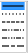
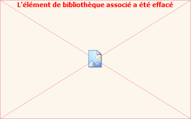
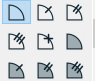
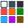

 |
For the line style selection of future objects created. |
|
Selection of line thickness. |
|
The 16 icons are for selecting predefined colors. Click the right ellipse  if you want to use an owner defined color. The ellipse will then take the chosen color.The cursor is for the choice of transparency level of the objects. The right ellipse indicates the rendering of an object with the chosen color and transparency. |
|
For the style of created points. |
|
For the style of segment marks. |
|
For the style of arrows (vectors and oriented angle marks). |
 |
For the style of angle marks. |
|
For the filling style of surfaces. The top left icon is for surfaces with transparency level. The black icon is for opaque filling. The rectangle underneath gives a preview of the filling style. |
|
To end some actions (such as finishing a polygon creation). |
To be noticed : Palette tool

allows you to modify the color and style of an object (just click on the object).